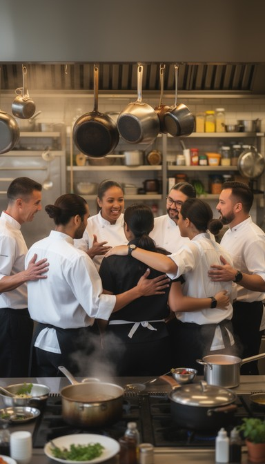

Our Story
From coffee bar to a 'common table' cafe.

Where we started
Common Table began in 2014 as a single coffee cart outside the library. The owner, Maria Lopez, had worked in restaurant kitchens for twelve years. She noticed that students on campus had two choices for lunch: vending machines or a fifteen-minute drive.
The cart sold coffee and muffins. Within the first semester, students asked for sandwiches, so Maria started making them at home each night. The line at noon grew long enough that the college offered her an empty room on the ground floor of the Student Center.
How we cook
Most of the menu is made in our own kitchen. Soups are cooked each morning. Bread comes from a bakery twenty minutes away, and we buy produce from two farms in the county when it is in season.
We keep prices low because most of our customers are students. A full lunch costs less than ten dollars, and we accept campus cards so nobody needs to carry cash.
Why "Common Table"
The first dining room had one long table because it was the only furniture that fit. People who did not know each other sat side by side. When we remodeled, we kept long shared tables on purpose.
Milestones
-
2014
The coffee cart opens
Coffee and muffins outside the library, weekdays from 7 to 11 AM.
-
2016
A room of our own
We move into the Student Center and add a sandwich counter.
-
2018
Full kitchen
A grill and a soup station are added, and hot lunch goes on the menu.
-
2021
Campus card accepted
Students can pay with their ID card at the register.
-
2023
Remodel and salad bar
Seating doubles to 120, and a salad bar opens.
-
2025
One million cups
We pour our millionth cup of coffee, counted from the first day of the cart.
Inside the cafe